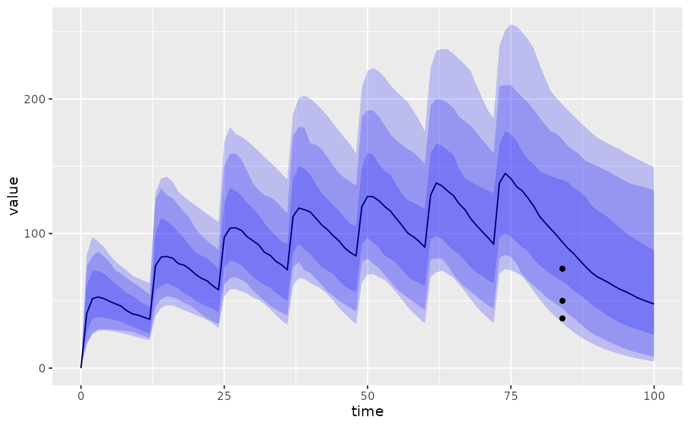
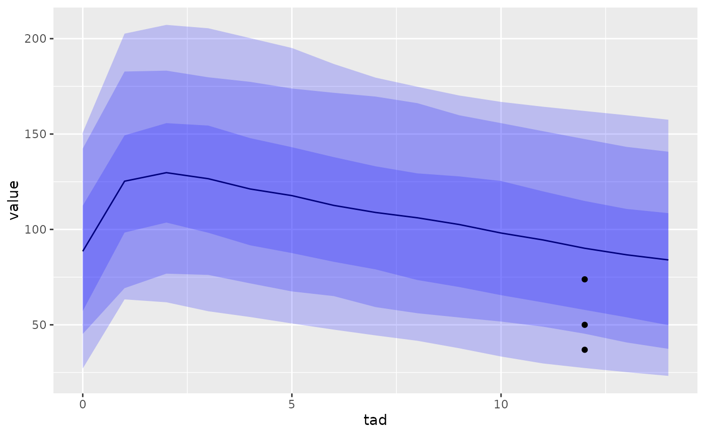
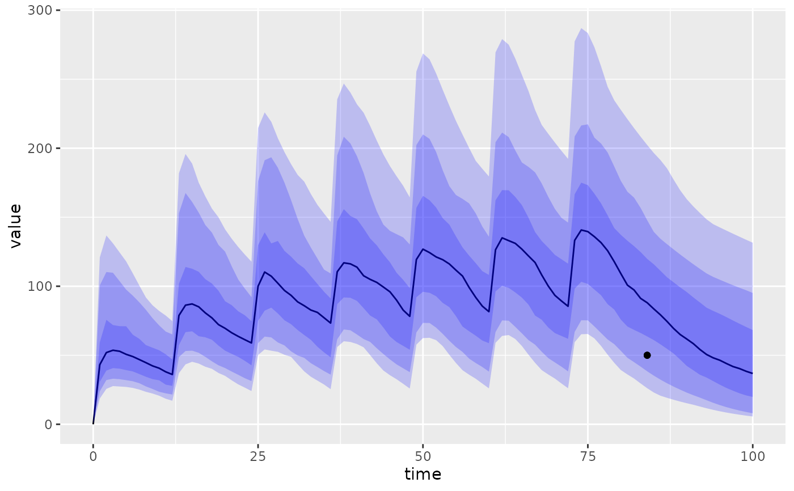
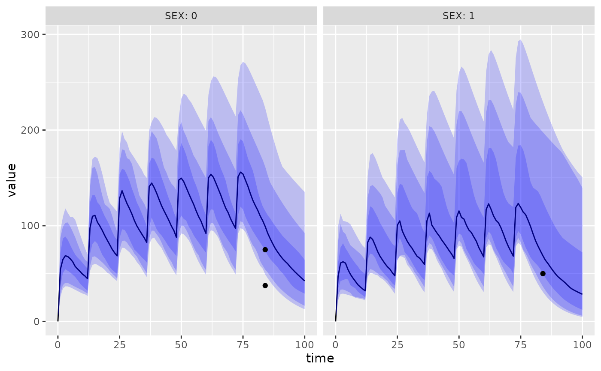

Visual Predicted Checks
Usage
mapbayr_vpc(
x,
data = NULL,
nrep = 500,
pcvpc = TRUE,
idv = "time",
stratify_on = NULL,
start = NULL,
end = NULL,
delta = 1,
...
)Arguments
- x
the model object
- data
NMTRAN-like data set
- nrep
a numeric, the number of replicates for stochastic simulations. Default is 500.
- pcvpc
a logical, if
TRUE(the default) will output "prediction-corrected VPC" (see Details).- idv
a character indicating the variable used as independent variable. Default is "time", alternatively use "tad" to automatically compute the time after last dose.
- stratify_on
a character (vector) indicating the variables of the data used to stratify the results. Variables must be numeric (as they are passed to
mrgsolve::carry_out())- start, end, delta, ...
passed to
mrgsolve::mrgsim()
Value
a ggplot object, results of the VPC. The median and the 50%, 80% and 90% prediction intervals of the simulated distributions are reported.
Details
Prediction-corrected VPC
By default, VPC are prediction corrected (Bergstrand et al (2011) doi:10.1208/s12248-011-9255-z ). This correction is advised if several levels of doses or covariates are in the dataset for instance. Note that the implemented correction formula does not take into account the 'lower bound' term (lbij), nor the log-transformed variables.
Examples
library(mrgsolve)
library(magrittr)
# Define a model. Adding variability to house model because default is 0.
mod <- house() %>%
omat(dmat(rep(0.2,4)))
# Creating dataset for the example
# Same concentration, but different dose (ID 2) and covariate (ID 3)
data <- adm_rows(ID = 1, amt = 1000, cmt = 1, addl = 6, ii = 12) %>%
obs_rows(DV = 50, cmt = 2, time = 7 * 12) %>%
adm_rows(ID = 2, time = 0, amt = 2000, cmt = 1, addl = 6, ii = 12) %>%
obs_rows(DV = 50, cmt = 2, time = 7 * 12) %>%
adm_rows(ID = 3, time = 0, amt = 1000, cmt = 1, addl = 6, ii = 12) %>%
obs_rows(DV = 50, cmt = 2, time = 7 * 12) %>%
add_covariates(SEX = c(0,0,0,0,1,1))
mapbayr_vpc(mod, data, nrep = 30) # prediction-corrected by default

mapbayr_vpc(mod, data, idv = "tad", start = 72, nrep = 30)

mapbayr_vpc(mod, data, pcvpc = FALSE, nrep = 30)

mapbayr_vpc(mod, data, stratify_on = "SEX", nrep = 30)
